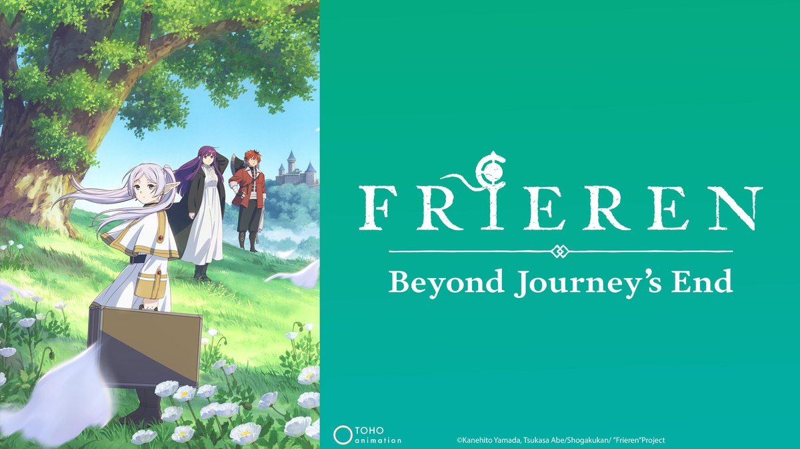

Top Anime Series in My Opinion
Below are my 3 favorite anime of all time. I will describe why I like them along with a picture. Please note that these are all just my opinion, and if you have your top favorites that are not the same, that's okay! If you dont like them, your entitled to your own opinion, otherwise if you havent checked these out, please do as they are worth the watch!
#3: To Your Eternity
"To Your Eternity" (Japanese: "Fumetsu no Anata e") is an anime series based on the manga of the same name written and illustrated by Yoshitoki Ōima. The anime adaptation was produced by Brain's Base and premiered in April 2021. It is a fantasy drama that explores themes of life, death, and the human experience. The story begins with an immortal being known as "It," sent to Earth with the ability to take on the form of anything it encounters. Initially, It starts as a simple, shapeless orb. After encountering a rock and a wolf, It eventually gains consciousness and understanding of the world. It goes through various transformations and experiences as it learns about life, death, and the emotions tied to being human. Throughout its journey, It encounters different individuals, forming bonds with them and witnessing the beauty and harshness of existence. The narrative spans across different settings and time periods, exploring the impact of It's interactions on the people it encounters. The series weaves a poignant and thought-provoking tale that delves into the essence of humanity and the inevitability of change. "To Your Eternity" is known for its emotional storytelling, exploring profound themes, and the evolution of the main character as it adapts to the experiences it undergoes. The series has received acclaim for its unique approach to storytelling and its ability to evoke a range of emotions from its audience. I'm going to be real, this anime made me BAWL my eyes out! It was so good and I'm pretty sure I'm caught up with the second season. You fall in love with almost all the characters and I seriously reccomend this show!
#2: Fate:Grand Order
"Fate/Grand Order" (often abbreviated as FGO) is a Japanese mobile role-playing game developed by Delightworks and published by Aniplex. It is part of the larger "Fate" multimedia franchise, which includes various anime series, manga, light novels, and other media. "Fate/Grand Order" was first released in Japan in 2015 and has since gained immense popularity worldwide.The game is set in the "Fate" universe, a complex and expansive fictional world where mages summon heroic spirits, known as Servants, to participate in a Holy Grail War. In "Fate/Grand Order," players take on the role of the protagonist, a Master, and embark on a time-traveling journey to prevent the incineration of humanity. I play the games and also watch the movies as well. I reccomend the movies as the animation is fantastic, but fair warning, you may be confused a little if you havent played the mobile games. Also, I want to mention that out of all the gacha games I've played, this one is the best when it come to getting rare characters. I'm glad I dont have to spend a thousand dollars to get a five or four star character. Usually if you have enough Saint Quartz, you have a good chance of getting a high rank character. I was struggling to place Unlimted Bladeworks here instead of Grand Order, but I love the mobile game so much, I decided for it to be number two. I also love the game/anime so much that I have two anime figures of King Arthur and Lancer; known as Cú Chulainn.
#1: Frieren:Beyond Journey's End
Frieren: Beyond Journeys End is a Japense manga written by Kanehito Yamada with the illustration being done by Tsukasa Abe. The manga was released in 2020 by Shogakukan's Shōnen manga magazine and produced by Madhouse in December 2023. The story follows a mage named Frieren, who is accompanied by her fellow party members who are, Eisen, Heiter, and Himmel. After defeating the Demon King and bringing the land to peace, the members decide to disband and live comfortable lives. Frieren, an elf that has a nihilistic oulook on life, decides to have her own adventure by wondering the earth looking to pass time in her own way as she can live for thousands of years. When Himmel, who is a human, passes away from old age however, she begins to realize that maybe she should've appreciated the time she had with her friends more. Ever since then, she slowly began to appreciate life and the people around her. This anime is fairly new, and I have enjoyed every single episode. The story and characters are amazing, and with every flashback we get from Frieren's past memories, we learn more about her as well as her past friends. The artstyle is fantastic and the music score is beautiful. I hope out off all the anime you have seen from my list, you'll consider watching this one first!